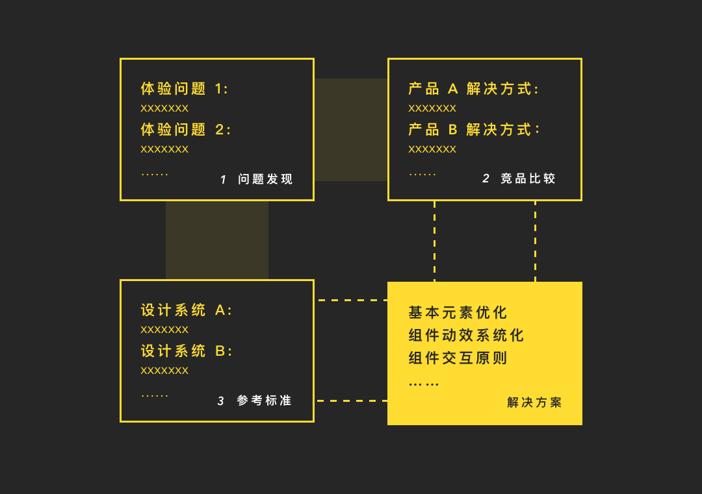
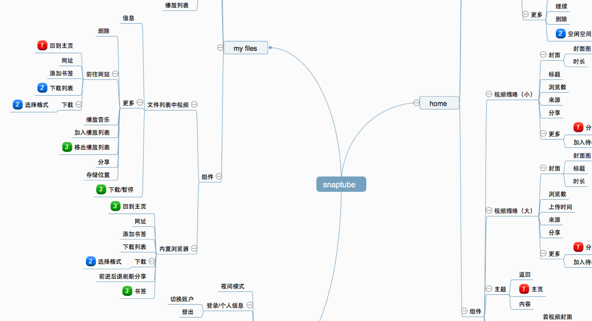
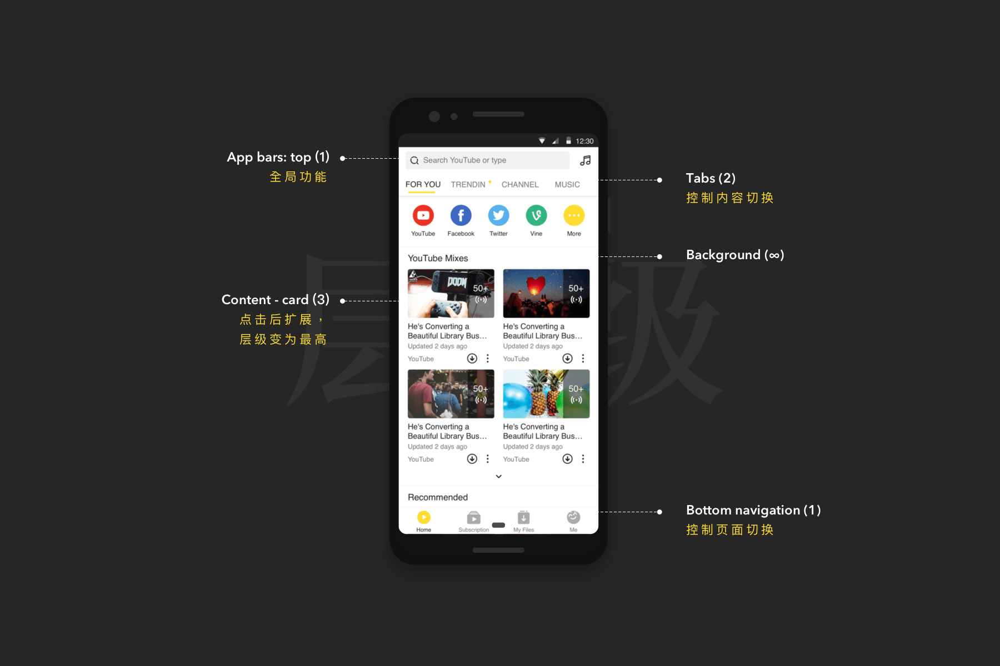
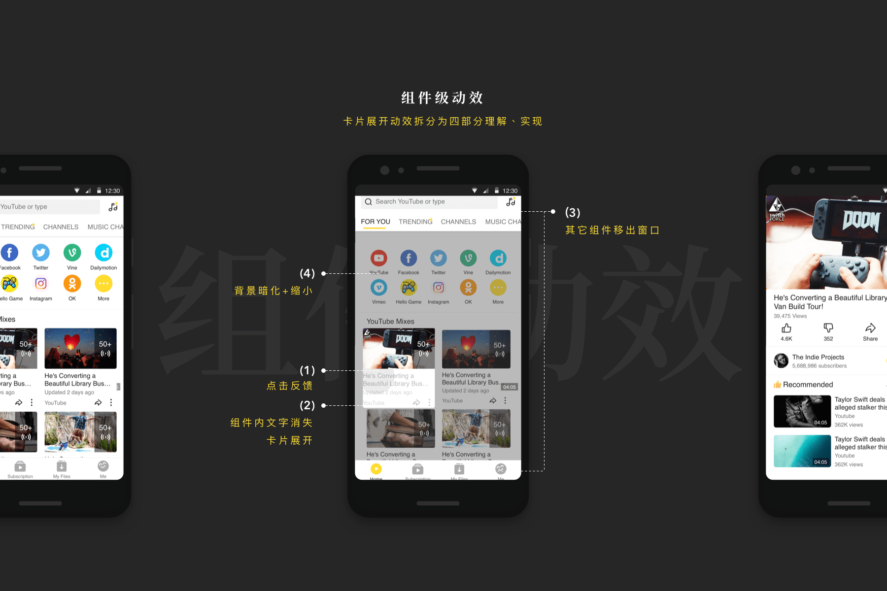
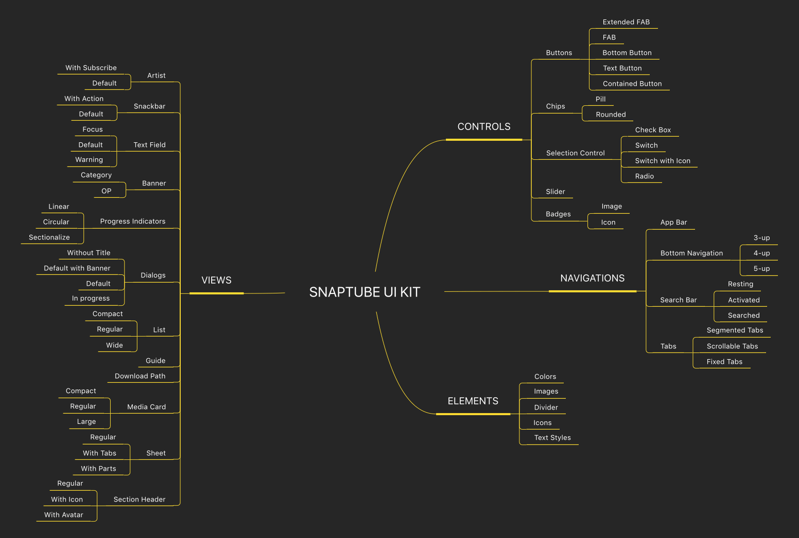
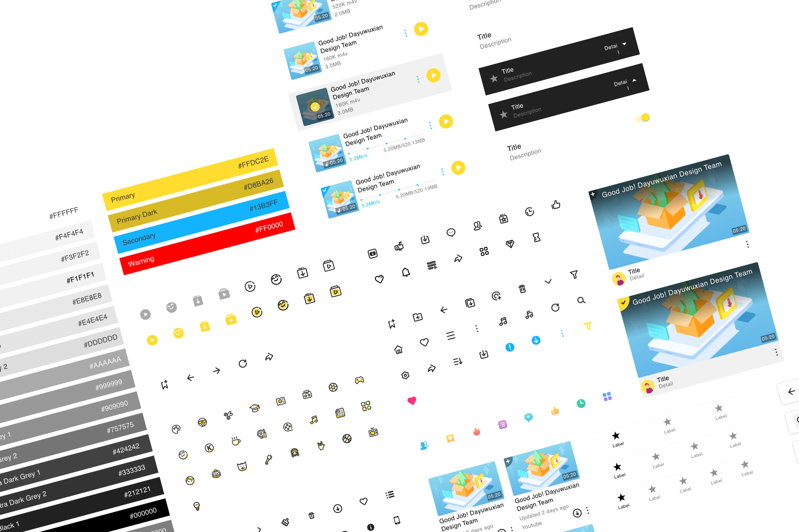

Mobiuspace

SNAPTUBE Project
ROLE交互动效设计 TIME2018.07-2018.08项目概述 Summary
Snaptube 是一个主打海外市场的安卓端视频 App，拥有千万级用户量。我作为实习生，参与其交互动效设计。
前期调查 Research
设计团队计划对 Snaptube 进行交互动效设计，我作为设计实习生，在 mentor 指导下，以 Material Design 为参考对图标、组件与页面的交互动效进行设计。
初来乍到再加上缺少相关经验，我在准备阶段的调查工作分为三步：熟悉并发现现有问题、比较分析竞品方案、查阅平台规范与知名设计系统。
一、发现现有问题
首先我尝试熟悉 Snaptube 的界面组件与交互，测试其所有功能，列出信息架构图，同时记录下出现体验问题的部分。
二、分析同类产品方案
Snaptube 的主要功能是播放以及下载视频；因此我分析了其同类产品如 Youtube 和西瓜视频的一些方案，按功能分条记录成文档。 做完这步后再次回顾之前记录的问题，尝试给出几种初步的方案备参考。
三、参考设计系统
因我主要负责组件部分的交互动效方案，为了使设计方案体系化，我阅读了国内外知名设计系统及其公开移动UI库，提取出各设计系统的组件库结构差异。
- 以组件单位分类
- 元素整合在所属组件中
- 内容样式可切换状态详细
- 高可定制性和复用性
- 以三大功能分类
- 元素脱离出组件
- 内容样式覆盖一般场景
- 易用性和复用性高
- 以使用情景分类
- 少数可修改元素
- 内容样式以组件为单位
- 仅是易用的模版
交互原则 Principle
经过一系列的前期准备与分工，我主要负责组件部分的交互动效方案。为了使方案更具系统性与一致性，我在设计不同组件间交互时，主要遵循以下三个原则：
一、功能逻辑通过层级反映
考虑到 Snaptube 的层级并不深，使用相对层级更利于应用原则；我参考 MD 的层级判断法，给出 Snaptube 的层级规则。
导航层级高于其可控制内容和低级导航
NavBar>Tab>…
含有更重要内容，层级更高
点击卡片后，该卡片层级变为最高
更需要即时操作的，层级更高
dialog, sheets,…
以首页为例，将页面上各个组件分级：
二、相对具体的操作反馈
在 Snaptube 中，每个操作都应该获得包含特定信息的回馈；操作反馈不限于简单响应，同时应当简单指示后续变化：
- 变化在组件内，指示点击位置
- 变化在一定距离的组件外，指示响应方向
- 组件本身进行变化，动效以操作点为中心，显示变化过程 Fluent design 也涉及到反馈的方向性： 去向何方/来自何处
三、突出用户预期内容
Snaptube 使用两种方式来突出用户操作后预期获得的内容：
对不可打断的过程,使用弹窗和深色遮罩
弱化非重点
有序项目出现时,按序有透明度与位置的变化
吸引注意力
组件动效 Motion
在这一部分，我对 Snaptube 中每个组件交互进行动效设计，并产出交互动效原型和文档。
为使较复杂的动效原型易于理解，我将单个组件级动效按其涉及范围分四块：
如上图，各部分分别是：
- 最小单位的点击反馈
- 组件内的内容变化
- 其它组件的变化
- 背景变化
以点击首页视频卡片为例，拆分此交互动效：
组件库 UI LIBRARY
在产出完整的交互动效方案文档后，我们决定将Snaptube 的现有UI资源整理成组件库，以便推进新交互方案的实现。
我们从易用性、复用性、可定制性与详细度四维度，分析组件库的使用人群的需求度：
权衡各类人群需求后，我们认为 Snaptube 组件库必须满足
- 按功能对组件进行分类 易于不熟悉情况下找寻
- 元素分离出组件 降低组件层级与复杂度
- 包含所有使用中组件的所有状态样式 方便研发获取信息
- 借助 sketch 的 symbol、override 与 resizing 搭建复用性与可定制性高的UI kit 易于设计师定制、删改部件
确定方向后，我们结合之前总结的各知名公开的UI kit特征，协作搭建Snaptube UI kit的整体框架：
最后在 sketch 中搭建完成，并利用 sketch library 进行同步。
体会与思考 REVISIONS
Snaptube 是我参与的第一个在较成熟商业模式下运作的、拥有大量用户的产品。虽然参与时间仅是短短两个月，但我依旧做了许多从未做过的工作、想了许多从未想过的问题、收获到许多在校内收获不到的知识和经验。
一 / 体系化、精细化
同样是做交互方案和动效，学生项目中只需几人间协调；但对于拥有用户基数与商业模式的项目，方案本身需要成体系，更细致，具备理论和实际的验证——只有如此，才能获得设计团队和开发团队的认同，并协作推动方案落地。
二 / 未来该如何走
除去得到的一些职场经验，这次实习让我一度犹豫不决的方向变得具体了起来。同时，也因为前辈们的帮助和经验分享，了解到该怎样切实一步步接近自己的目标。